Ganadora del premio Amazing Menu de Nokia
Mon, 26 Dec 2011 21:30:23 +0000
Despúes de varios dias en los que hemos podido disfrutar con la iniciativa ofrecida por Nokia y su Amazing Menu, y en el que han participado muchos blogs amigos, el concurso ha llegado a su fín por lo que ya podemos compartir con todos quien ha sido nuestra ganadora. Los restaurantes que teníais que adivinar [...]
Despúes de varios dias en los que hemos podido disfrutar con la iniciativa ofrecida por Nokia y su Amazing Menu, y en el que han participado muchos blogs amigos, el concurso ha llegado a su fín por lo que ya podemos compartir con todos quien ha sido nuestra ganadora.
Los restaurantes que teníais que adivinar eran el restaurante Europa y el Dionisos L’argentera.
Rosa Coll (@rosacoll en Twitter) ha sido la afortunada ganadora de la comida o cena para dos personas en un restaurante con una Estrella Michelín, valorado en más de 120 €. ¡Enhorabuena Rosa!.
Estamos seguros que disfrutarás a lo grande de tu premio gracias a Nokia y Barestop y nos encantaria que nos enviaras muchas fotos cuando vayas. Es más, si te animas a escribir un pequeño post, en Barestop estaremos encantados de poder publicarlo.
En este video podeis ver como se sorprendieron los afortunados que disfrutaron de un Amazing Menu por cortesía de Nokia
Ver video
Damos la gracias a todos los que habeis participado y os deseamos un Feliz Año 2012!!!
Groupon
Thu, 15 Dec 2011 18:35:32 +0000
El post del que os hablamos hoy es un poco especial, ya que no os hablaremos de ningún restaurante ni de ningún evento gastronómico, pero es un tema que está relacionado. Hoy os hablaremos de Groupon ¿lo conocéis? ¿aún no? Pues nosotros os lo explicamos. Groupon es una web de compra colectiva en la que [...]
El post del que os hablamos hoy es un poco especial, ya que no os hablaremos de ningún restaurante ni de ningún evento gastronómico, pero es un tema que está relacionado.
Hoy os hablaremos de Groupon ¿lo conocéis? ¿aún no? Pues nosotros os lo explicamos.
Groupon es una web de compra colectiva en la que te ofrecen muchísimas ofertas para tu ciudad con descuentos que pueden llegar hasta el 70%. Pueden ser descuentos para restaurantes, spas, masajes, productos, cursos, etc…
¿Y cómo funciona? Pues es facilísimo. Sólo tienes que registrarte en su web, escoger el descuento que te interesa, comprarlo y disfrutar de la oferta, así de simple. La única condición para obtener el descuento es que un mínimo de personas lo compre, de ahí lo de compra colectiva.
Tendréis disponible vuestro cupón pasadas las 00:00 horas tanto en vuestro mail como en el apartado “Mi cuenta” de la web. Eso sí, no os durmáis porque las ofertas sólo duran un día. Y cómo sabemos que os lo estáis preguntando, la respuesta es no, no tenéis que usar vuestro cupón el mismo día de comprarlo.
El cupón lo podéis usar hasta la fecha que indique el descuento que has elegido, que suele ser de varios meses.
Nosotros pudimos probarlo hace unos días. Encontramos una oferta muy buena para el restaurante Vintage ahorrándonos un 61%. Un menú de 90€ para dos personas por tan sólo 35€ (55€ de ahorro).
La experiencia fue buenísima. Llamamos para reservar en el Vintage, imprimimos nuestro cupón, fuimos al restaurante, lo entregamos y disfrutamos de la cena sin tener que pagar nada más. Por supuesto os hablaremos de esta cena en un post dentro de poco. Os adelantamos unas fotillos!
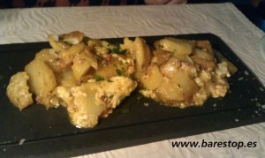
Huevos estrellados con sobrasada y miel
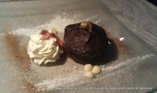
Brownie casero Vintage
Y además si recomiendas Groupon a tus amigos puedes ganar 6 €. Le tienes que enviar a tu amigo el enlace de recomendación y él se tiene que registrar desde el enlace que tú le envíes y hacer una compra en las siguientes 72 horas. Inmediatamente después se ingresarán en tu cuenta 6€ para que los uses en las próximas compras que hagas en Groupon.
Y si lo prefieres también puedes descargarte su aplicación móvil, disponible para Android y Iphone.
Así que ya no tienes excusa, corre a registrarte en Groupon, recomiéndaselo a todos tus amigos y disfrutad juntos de las mejores ofertas de tu ciudad.
Vamos a regalar un código de descuento de 20 euros para que compres cualquier oferta de su web. Para ello vamos a realizar un sorteo en los próximos días en nuestro Facebook ,así que estad atentos.
“De tapes per Barcelona” 1º ruta
Sat, 03 Dec 2011 09:12:06 +0000
El miércoles tarde estuvimos de ruta por Barcelona disfrutando de la 4ª Edición del “De tapes per Barcelona”. Para está primera ruta escogimos la zona del Born, cerca de la catedral de BCN. Comenzamos por el El café d’en Víctor con su original tapa “Miki”: Bomba de queso camembert con mousse de foie, semillas de [...]
El miércoles tarde estuvimos de ruta por Barcelona disfrutando de la 4ª Edición del “De tapes per Barcelona”. Para está primera ruta escogimos la zona del Born, cerca de la catedral de BCN.
Comenzamos por el El café d’en Víctor con su original tapa “Miki”: Bomba de queso camembert con mousse de foie, semillas de rosella, parmesano y mermelada casera de tomate. El café d’en Víctor se llevó el premio a la mejor tapa para el Gremio de la tercera edición, y estamos seguros que en esta también estará luchando por un premio ya que, además de muy original en la presentación, está realmente rica.
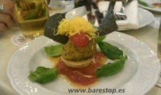
El Micky de El café d'en Víctor
Luego fuimos a probar la tapa “La Inmaculada” del bar PaTapas (local que hasta hace poco era “Bready”) La tapa está hecha de hojaldre de paté casero con coulis de arándanos. La verdad que la mezcla de sabores no fue muy acertada para nuestro gusto. Fue la tapa más floja de la noche.
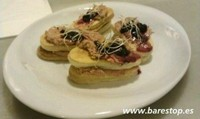
La Inmaculada del PaTapas
Continuamos nuestra ruta con el “Dolç de Pollastre” del Cal Brut. Una tapa sencilla en presentación pero bastante buena. Se compone de: pollo, aceite de sésamo, salsa de soja, azúcar moreno, jengibre, tomates secos vino blanco, albahaca fresca, canela y semillas de cardamomo. El local es pequeño, decorado con tablas de surf y muchas fotos y muchos mensajes escritos por las paredes. Hay poco sitio, así que os recomendamos ir pronto.

Dolç de Pollastre del Cal Brut
Y nuestra ruta del primer dia acabó en el Navia con su tapa con nombre llamativo “Próxima parada: Estación de Francia”. Una tapa muy sabrosa compuesta de muslito de pollo relleno de jamón con salsa de almendras y queso emmental.
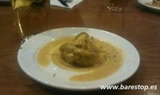
Próxima parada: Estación de Francia del Navia
Si aún no habeis ido a hacer vuestra ruta de tapas recordad que tenéis de tiempo hasta mañana día 4 y que disponéis de más info en su web www.detapesperbarcelona.es
Nosotros repetiremos, así que estad atentos porque os dejaremos nuestras experiencias muy pronto.
Barcelona Restaurant Week 2011 – 2a Edición
Fri, 18 Nov 2011 17:08:40 +0000
Hoy 18 de noviembre comienza la segunda edición del Barcelona Restaurant Week. Esta iniciativa pretende poner a disposición de todos los bolsillos la alta gastronomía de la ciudad. Para ello 28 de los mejores restaurantes de la ciudad han creado un menú propio a un precio fijo y asequible de 25€ (bebida e IVA no [...]
Hoy 18 de noviembre comienza la segunda edición del Barcelona Restaurant Week.
Esta iniciativa pretende poner a disposición de todos los bolsillos la alta gastronomía de la ciudad.
Para ello 28 de los mejores restaurantes de la ciudad han creado un menú propio a un precio fijo y asequible de 25€ (bebida e IVA no incluidos). Además esta también es una iniciativa solidaria ya que por cada menú se destinará 1€ a una de las ONGs colaboradoras para realizar acciones de responsabilidad social.
Después del celebrarse con éxito en Madrid y Sevilla le toca el turno al Barcelona Restaurant Week 2011 que permanecerá en la ciudad hasta el 27 de noviembre.
Podéis ver los 28 restaurantes que se han apuntado a esta segunda edición y sus menús aqui ==> Lista de restaurantes.
El Restaurant Week se celebró por primera vez en 1992 en Nueva York, con la participación de 90 restaurantes, en colaboración con la Semana de la Moda y con la intención de aumentar la ocupación en la restauración en la denominada “temporada baja”. Hoy en dia ya cuenta con mas de 10.000 restaurantes como miembros participantes.
Ya sabéis, muy buenos menús por 24+1 euros. A disfrutar de la Barcelona Restaurant Week
EnTapa’t en el Raval “Bebida+Tapa 3 euros”
Fri, 11 Nov 2011 17:37:41 +0000
Hola a tod@s!! Vamos con la recomendación del fin de semana. Del 11 al 13 de noviembre se celebra EnTapa’t en el Raval de Barcelona. ¿Que es EnTapa’t? Es una iniciativa a la que se han apuntado 56 bares y restaurantes del Raval, en los que podrás disfrutar de una bebida + tapa por 3 [...]
Hola a tod@s!!
Vamos con la recomendación del fin de semana. Del 11 al 13 de noviembre se celebra EnTapa’t en el Raval de Barcelona.
¿Que es EnTapa’t?
Es una iniciativa a la que se han apuntado 56 bares y restaurantes del Raval, en los que podrás disfrutar de una bebida + tapa por 3 euros.
Además en una treintena de estos locales podrás disfrutar también de música en acústico, todo ello se enmarca dentro del Festival del Raval que ofrece diferentes actividades culturales.
EnTapa’t está organizado por la Fundació Tot Raval y colaboran la Asociación de Comerciantes del barrio.
¿Qué bares y restaurantes ofrecen bebia+tapa por 3 euros?
Te dejamos una lista en pdf con los 56 bares y restaurantes, un mapa donde podrás encontrarlos más facilmente y los horarios, ya que algunos no hacen la tapa todo el día, y otros el domingo están cerrados.
Más información de utilidad:
Aquí teneis la información de los locales y algunas fotos y nombres de las tapas que ofrecerán:
Lista de bares y restaurantes
Aquí os dejamos el mapa:
Mapa de los locales
Y aquí tenéis los horarios de cada local para poder disfrutar de las tapas:
Horarios
Nos vemos “entapeando”!!
Galician Grill
Sun, 18 Dec 2011 10:04:08 +0000
Hoy os traemos un restaurante que gustará mucho a aquellos que os consideráis amantes del buen tapeo. Se trata del Galician Grill y se encuentra en la calle Foneria 7 de Barcelona, muy cerca del centro comercial Gran Via 2. Aunque hemos oido que las carnes que preparan aquí son espectaculares, nosotros las dos veces [...]
Hoy os traemos un restaurante que gustará mucho a aquellos que os consideráis amantes del buen tapeo. Se trata del Galician Grill y se encuentra en la calle Foneria 7 de Barcelona, muy cerca del centro comercial Gran Via 2.
Aunque hemos oido que las carnes que preparan aquí son espectaculares, nosotros las dos veces que hemos estado hemos escogido la opción del tapeo y no nos arepentimos. Eso sí, volveremos para probar sus carnes y su marisco del que tanto hablan.
En está ocasión fuimos 4 personas y pedimos 6 tapas con las cuales quedamos más que llenos (incluso sobró un poco).
Teníamos claro que queríamos probar el Pulpo a Feira, así que pedimos una ración. Te lo traen en la tipica tabla, junto con patatas cocidas. La verdad es que está realmente bueno con la cantidad correcta de pimentón y de aceite, aunque algunos de los comensales lo encontraron un pelín duro. Cuesta 18€, como ya sabéis el precio del pulpo es caro pero dada la calidad y que la ración era bastante grande, pedir esta tapa es muy recomendable.
Ya que la especialidad de este restaurante es la comida gallega pedimos también una ración de lacón cocido y empanada gallega. El lacón es bueno sin llegar a destacar y la empanada, aún siendo mucho mejor que la probada en otros restaurantes no se puede comparar a la empanada casera que prepara mi madre, jeje.
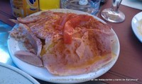
Lacon Cocido con patatas
También pedimos un plato de patatas bravas con ali oli, que además de ser muy abundantes y traer mucha cantidad de ali oli estaban realmente buenas, una ración de chipirones fritos normalitos, y una bandejita de morcilla de arroz muy rica!
Además, aunque era invierno, pudimos aprovechar el sol en su terraza ya que la tienen acondicionada con lonas transparentes para evitar el aire.
Las 6 tapas, mas 3 cortados y un té nos costó 57€, menos de 15€ por persona. Ya sabéis, si os gusta tapear el Galician Grill es una muy buena opción calidad precio.
Galician Grill
C/Foneria, 7 – Barcelona
Tel: 93 298 98 06
Cómo llegar:
FGC: Ildefons Cerdà
Ver en Google Maps
Gana una cena con estrella gracias a Nokia Amazing Menu
Wed, 14 Dec 2011 06:23:24 +0000
Ya huele a Navidad, las calles están iluminadas, adornadas, llega el frío y para unirnos a este ambiente navideño, desde Barestop os queremos hacer un regalo! si si, lo estáis leyendo bien, un regalo en toda regla!! No sabéis lo contentos que estamos de poder ofreceros este gran regalo. ¿De qué se trata? El regalo [...]
Ya huele a Navidad, las calles están iluminadas, adornadas, llega el frío y para unirnos a este ambiente navideño, desde Barestop os queremos hacer un regalo! si si, lo estáis leyendo bien, un regalo en toda regla!! No sabéis lo contentos que estamos de poder ofreceros este gran regalo.
¿De qué se trata?
El regalo es una comida o cena para dos personas en un restaurante con una Estrella Michelín, valorado en más de 120 €!! gracias al concurso Amazing Menu organizado por Nokia.
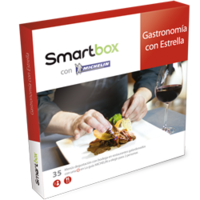
Durante estos días tenéis que estar muy atentos a nuestro Twitter (para ello síguenos en @Barestop) y Facebook porque a partir del 19 de diciembre vamos a dar unas pistas para que adivinéis el nombre de 2 restaurantes.
¿Cuando daremos las pistas?
- La pista para el primer restaurante la daremos el día 19 de dicembre en nuestro Twitter y Facebook
- La pista para el segundo restaurante la daremos el día 20 de dicembre también en nuestro Twitter y Facebook
El primero que nos de la respuesta con los dos restaurantes en nuestro Twitter, gana la cena.
Muy importante , para que la respuesta sea válida debe tener el siguiente contenido, en este orden y en un único tweet:
Nombre correcto de los 2 restaurantes + @Barestop + hashtag #amazingmenu + @NokiaSpain
Y además, tenéis que ser followers de Nokia (@NokiaSpain).
Ejemplo de respuesta
Restaurante1, Restaurante2, @Barestop #amazingmenu @NokiaSpain
Volvemos a repetir, se tienen que dar todas estas condiciones para que seas el ganador, y por tanto será una condición imprescindible que seas seguidor de Nokia en Twitter, para poder obtener el premio y además lo menciones en el tweet de la respuesta.
Por cierto, se puede apuntar cualquier persona ya que los restaurantes con 1 Estrella Michelín que se podrán elegir están distribuidos en infinidad de ciudades de España.
Cualquier duda que os surja podéis preguntarnos a través de nuestro Twitter, Facebook, e-mail o dejándonos un comentario en este mismo post.
Gracias a tod@s por seguir a nuestro lado, un gran abrazo y Feliz Navidad!!! jou jou jou
De Tapas por Barcelona 2011 – 4ª Edición
Sun, 27 Nov 2011 14:17:55 +0000
Del 29 de noviembre al 4 de diciembre de 2011 vuelve a Barcelona el gran evento gastronómico “De Tapes per Barcelona” en la que será ya su 4ª edición. En esta ocasión serán 39 los locales que ofrecerán su tapa junto a una cerveza Damm por 2,40€ y competirán por hacerse con el premio a [...]
Del 29 de noviembre al 4 de diciembre de 2011 vuelve a Barcelona el gran evento gastronómico “De Tapes per Barcelona” en la que será ya su 4ª edición.
En esta ocasión serán 39 los locales que ofrecerán su tapa junto a una cerveza Damm por 2,40€ y competirán por hacerse con el premio a la mejor tapa.
En su web tenéis el listado de bares que se han apuntado www.detapesperbarcelona.es y además ya os podéis descargar el mapa con la situación de los bares y con la fotografía de la tapa que presentan al concurso en este PDF que ha elaborado de Tapes per Barcelona.
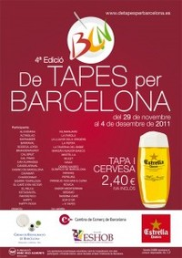
Cartel de Tapes per Barcelona 2011>
También podeís seguir el desarrollo del concurso desde facebook aquí, donde ya han puesto algunas fotos de tapas participantes.
Aquí os ponemos unas cuantas fotos extraídas de su página de Facebook:
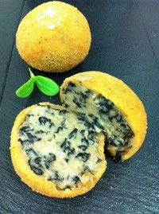
Bomba de trompetes de la mort de Altinglao>
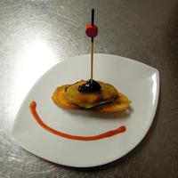
Sonriente boquerón relleno de queso fresco y salmón marinado sobre calabacín a la plancha del Candelaraval
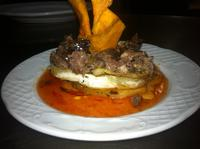
Mil hojas de patatas con carrillera de buey a la cerveza con coulis de mermelada de tomate de Can Xurrades>
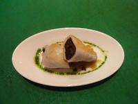
Calamarcito relleno de butifarra negra y cebolla confitada de Fantastico
Después de degustar la tapa podréis puntuarla de 1 a 3 y pedir que os sellen la papeleta. Cuando tengas la papeleta sellada por tres locales podrás depositarla en la urna (hay urnas en todos los locales) para decidir cuál es la mejor tapa. También habrá premio a la tapa elegida por el Gremio de Restauración de Barcelona y a la tapa elegida por Damm como patrocinador.
Y recuerda que entre todos los participantes también se sortearán grandes premios.
Barestop estará como cada edición disfrutando de este gran evento, y esperamos que todos vosotros también os animéis a probarlo y a dejarnos vuestros comentarios aquí en el blog, en nuestra página de Facebook o en Twitter .
Visita EnTapa’t al Raval
Sun, 13 Nov 2011 13:58:27 +0000
Ayer hicimos una ruta matinera al EnTapa’t al Raval, y de los 56 bares y restaurantes elegimos 3 locales, y la verdad es que la elección fue bastante acertada. Así que os dejamos nuestras fotos y opiniones por si os animais, además esto ha servido para conocer estos locales y probar más detenidamente su carta [...]
Ayer hicimos una ruta matinera al EnTapa’t al Raval, y de los 56 bares y restaurantes elegimos 3 locales, y la verdad es que la elección fue bastante acertada. Así que os dejamos nuestras fotos y opiniones por si os animais, además esto ha servido para conocer estos locales y probar más detenidamente su carta un día de estos.
Sabemos que había muchos sitios que probar y seguro que quizás alguno mejor de los que proponemos, pero comentaremos nuestras opiniones de los 3 que probamos:
En el Barraval situado al principio de la Rambla del Raval probamos la tapa de Milhojas de hojaldre con mousse de bacalao y garbanzos. Se trata de un local acogedor, en el que puedes tanto comer como tomar unas copas, mientras escuchas música y observas sus fotografías urbanas. El tipo de cocina es mediterránea creativa, lo que se ve en la originalidad de sabores de la tapa que han preparado para el Entapa’t.
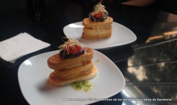
Tapa Milhojas de hojaldre con mousse de bacalao y garbanzos
En el Cera 23 como su nombre indica se encuentra en la C/ Cera nº 23, y antes de ir ya habíamos oído hablar muy bien de este local. Así que como la tapa nos llamó la atención decidimos probarlo.
Su tapa una “delicia gallega” que es como la han llamado era un Montadito de solomillo, cebolla caramelizada y pimiento del padrón. Los dos chicos que nos atendieron eran gallegos, muy simpáticos y en honor a su tierra han preparado esta tapa. El tipo de cocina es mediterránea y además después de cenar puedes también disfrutar tomando unas copas. La decoración es original y nos encantó la buena música, un día de estos iremos a probarlo.

Montadito de solomillo, cebolla caramelizada y pimiento del padrón
Y por último probamos la tapa del B-Lounge Hotel Barceló Raval, hotel con un diseño muy moderno y cosmopolita ubicado en la Rambla del Raval 17.
Su tapa exquisita: huevo frito, patatas enrolladas y chorizo ibérico, una mezcla entre tradicional pero con un toque de originalidad y modernidad. De acorde con su también original y cuidada decoración con sofás rosas, grandes lámparas y agradable ambiente.
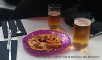
Carpaccio de huevo frito, patatas enrolladas y chorizo iberico
Esperamos que os sirva nuestra opinión, y esperemos que estas iniciativas se repitan.
Un saludo a tod@s
Tapa solidaria
Mon, 07 Nov 2011 19:53:59 +0000
Hoy os escribimos un post diferente y que nos parece una gran iniciativa: La Tapa Solidària. Tapa Solidaria Y es que desde el momento en que leímos en qué consistía nos encantó la idea y pensamos que merecía como mínimo escribir un post en nuestro blog. ¿En qué consiste? Con la iniciativa de La Tapa [...]
Hoy os escribimos un post diferente y que nos parece una gran iniciativa: La Tapa Solidària.
Y es que desde el momento en que leímos en qué consistía nos encantó la idea y pensamos que merecía como mínimo escribir un post en nuestro blog.
¿En qué consiste?
Con la iniciativa de La Tapa Solidaría 0,5 euros del precio que pagues por tomar esta tapa va destinado al Casal dels Infants.
Unos aproximadamente 60 restaurantes de Barcelona son los que se han unido a esta causa, y cada uno ha diseñado su “tapa solidaria”.
¿En qué estaremos colaborando?
Pues los beneficios conseguidos se van a destinar a proyectos para ayudar a que niños y jóvenes de Barcelona que viven en situación de pobreza y exclusión social puedan tener más oportunidades.
¿Qué restaurantes ofrecen la Tapa Solidaria?
Como es una lista bastante amplia, os dejamos un link que han hecho de los restaurantes colaboradores.
Además si estás registrado en Foursquare podrás dejar tu opinión de cada una de las tapas que degustes.
Para ver la lista dale aquí
¿Cuánto durará la iniciativa de la Tapa Solidaria?
Dura 3 meses a partir del 6 de octubre de 2011.
Os dejamos también la web de la Tapa Solidaria por si queréis más información www.tapasolidaria.org